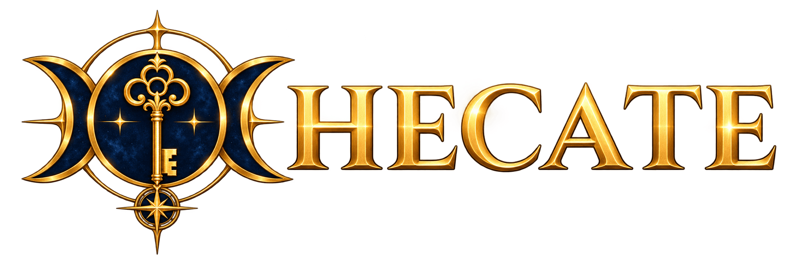

Governança e controle de impressão
Uma solução para transformar impressão dispersa em serviço governado, seguro e auditável.
Quem é HECATE?
Hécate representa limiar, decisão, vigilância e passagem controlada. O nome foi escolhido por traduzir a ideia de governar quem acessa, quem autoriza e o que precisa permanecer rastreável.
Qual a função da plataforma?
Centralizar e governar o fluxo de impressão das OM, com autenticação, controle, cotas, auditoria e rastreabilidade, integrando identidade, controle e dados.

Imprimir é simples. Governar a impressão, não.
Visibilidade limitada
Sem uma visão comum, fica difícil saber quem imprimiu, onde, quanto e sob qual contrato.
Regras dispersas
Acesso a impressoras, cotas e exceções dependem de processos separados e pouco rastreáveis.
Operação desigual
Cada OM precisa implantar, acompanhar e recuperar o serviço de forma consistente.
HECATE coordena decisões; cada componente executa seu papel.
Identidade
Reconhecer usuário e vínculo institucional antes de conceder acesso.
Samba AD · Keycloak · Catálogo MBControle
Aplicar política, cota, aprovação e liberação deliberada.
HECATE · SavaPage · CUPSDados
Registrar decisões, contabilizar consumo e apoiar auditoria e indicadores.
PostgreSQL · hecate-agentQuem é o usuário? A qual OM e divisão pertence?
Samba AD
Fornece usuários, grupos e vínculos necessários, consultados em leitura.
Valor: evita criar uma identidade paralela para imprimir.Keycloak
Oferece entrada no portal por SSO/OIDC e administração da autenticação.
Valor: acesso centralizado e sessões controladas.Catálogo MB
Fonte oficial da estrutura, lotação e divisão das OM.
Atualizá-lo permite correlacionar a OM com usuários e grupos lidos do Samba AD.Da solicitação ao consumo confirmado
Usuário envia
Envia o documento à fila controlada.
SavaPage retém
Guarda o job antes da impressão física.
HECATE decide
Confere divisão, acesso e cota; reserva saldo.
SavaPage libera
Libera o job retido pela interface suportada.
CUPS entrega
Encaminha à fila física e à impressora.
HECATE reconcilia
Confere páginas P&B/coloridas e fecha a cota.
O valor de SavaPage e CUPS
SavaPage
Recebe e retém o job, fornece metadados, controla sua liberação e contabiliza a impressão.
Para o HECATE: cria o ponto de controle entre o envio do usuário e a execução.CUPS
Gerencia as filas físicas e transporta o job liberado até a impressora.
Para o HECATE: conecta a decisão de liberar ao equipamento real.Os componentes que sustentam o serviço
PostgreSQL
Guarda políticas, cotas, reservas, auditoria e dados operacionais.
Valor: consistência transacional e rastreabilidade.hecate-agent
Executa descoberta, diagnóstico, monitoramento e operações locais controladas.
Valor: visibilidade e ações técnicas auditáveis na OM.Podman + Nexus
Podman hospeda serviços previstos em contêineres; Nexus distribui artefatos homologados.
Valor: implantação e atualização reproduzíveis.Dados institucionais atualizados, operação local
HECATE da OM
Opera impressão, políticas, cotas, contratos, auditoria e indicadores da própria OM.
Impressão e administração locais continuam durante falha temporária do Catálogo MB.Catálogo MB + Samba AD
O HECATE consulta diretamente os dados institucionais no Catálogo MB e usuários e grupos no AD.
O snapshot local é somente leitura e mantém a última atualização bem-sucedida.Como será a experiência de impressão?
1 · Enviar
O usuário envia o documento pelo caminho de impressão configurado para sua OM.
As impressoras dependem de sua divisão e das políticas. O login atual é demonstrativo.2 · Confirmar
O job fica retido até a confirmação de liberação pelo usuário, com PIN no fluxo previsto.
A cota considera valores alocados, consumidos e reservados. A liberação integrada ainda depende de POCs.3 · Acompanhar
O resultado e o consumo devem ser confirmados pela contabilização da impressão.
Em caso de falha incerta, a reserva fica pendente de reconciliação.Quem consultar quando algo falhar?
Acesso e contexto
AD: usuários e grupos. Keycloak: autenticação. Catálogo MB: identificação e dados institucionais.
Verificar última sincronização, divergências e estado do snapshot; corrigir dados institucionais na fonte oficial.Job e equipamento
SavaPage: retenção, liberação e accounting. CUPS: fila e entrega à impressora. Agent: descoberta e diagnóstico locais.
Liberação aceita não equivale a impressão concluída.Dados e continuidade
PostgreSQL: dados operacionais, cache e auditoria. Nexus: artefatos homologados.
Monitorar backup, restore, atualização e reconciliação na instalação da OM.O que existe e o que precisa ser provado
Base já presente
Yii3, PostgreSQL configurado, dashboard inicial, cadastro e listagem de impressoras, CSRF e componentes preliminares de reserva e liberação.
Próximas evidências
Identidade institucional, escopo e autorização, integração SavaPage/CUPS, accounting, concorrência, descoberta pelo Agent e Catálogo MB.